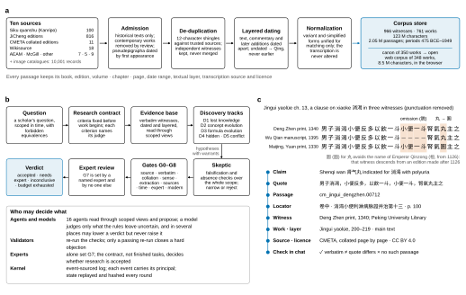
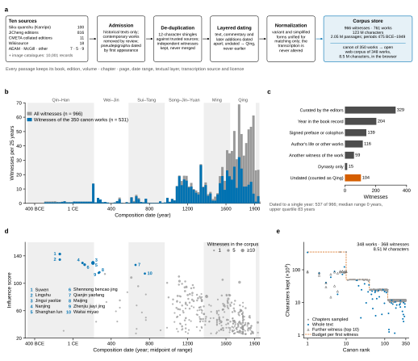
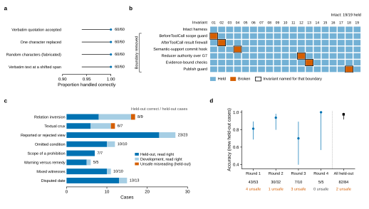
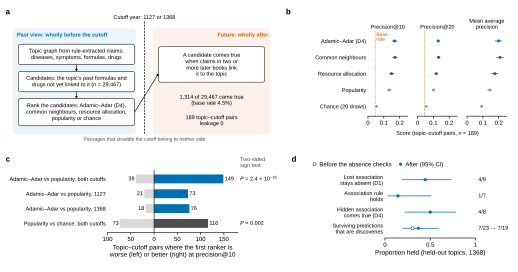
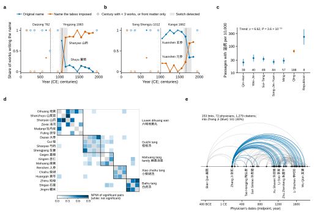
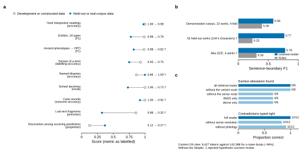
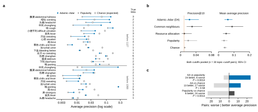
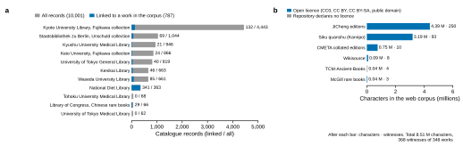

a, Construction of the corpus. Transcriptions from ten sources pass admission (historical texts only), de-duplication against more trusted sources (normalized 12-character shingles; independently collated transcriptions are kept as separate witnesses), layer-aware dating (main text, commentaries, editors' notes and later additions dated apart; undated material counted as Qing, never earlier) and normalization used for matching only. The store holds 966 witnesses of 761 works (123 million characters, 2.05 million passages); a canon of 350 works ranked by the citation network yields an open corpus of 348 works that runs in the browser. b, The research cycle. A question becomes a contract whose criteria are fixed before work begins; evidence is read through scoped views; five discovery tracks (D1 lost knowledge, D2 concept evolution, D3 formula evolution, D4 hidden associations, D5 contradictions) propose hypotheses with warrants, which the Skeptic tries to falsify, with absence checks over the whole scope, before nine gates (G0 source to G8 modern evidence) and expert review. The lower box states which principal may decide what. c, One clause of the Jingui yaolüe (chapter 13) in three witnesses, punctuation removed, aligned character by character: the Deng Zhen print (1340) as base, the Wu Qian manuscript (1395), which lacks 小便一斗, and the Yuan print of the Maijing (1330), which writes 圎 for 丸, a Song taboo form that dates its exemplar after 1126. Shaded columns mark variant positions. Below, the provenance chain of the first witness from claim to licence; the conversation client checks every cited passage identifier against the store (✓ verbatim, ≠ quotation differs, × no such passage). CMETA, 數位中醫校書郎 collated editions; AEAM, Tōa Igaku Kyōkai.

a, Witnesses per 25-year bin by composition date; each witness counts once, its weight spread evenly over its date range (n = 966; blue, the 531 witnesses of the 350 canon works). Bands mark the analysis periods; the last, unlabelled band is the Republican period (1912–1949). b, Basis on which each witness was dated; the 104 undated witnesses are counted as Qing (vermillion), never earlier. c, Influence score of the 350 canon works against the midpoint of their composition range; point area, witnesses in the corpus (capped at 10). Score = 10 log₂(1 + citing works not older than it) + 2 × periods in which it is cited + 2 log₂(1 + citations) + 3 log₂(1 + witnesses) + 6 × inclusion in the Siku quanshu; the ten highest (blue) are keyed by rank. Later works have had fewer chances to be cited: the score describes what the corpus cites, not a verdict on the tradition. d, Characters kept for each witness of the open web corpus against the canon rank of its work (log–log). Dashed line, the budget of a work's first witness (350,000 characters for ranks 1–10, then 50,000, 25,000 and 12,000); blue, texts kept whole; triangles, second and third witnesses of the ten highest-ranked works. Data: corpus catalogues (corpus/catalog) and the web corpus pack (corpus/web).

a, Quotation checks on 60 random passages of the demonstration corpus: verbatim quotations accepted; quotations with one character replaced, of random characters, or verbatim at a shifted span rejected. Dots, proportions; lines, Wilson 95% confidence intervals. b, Nineteen invariants (I01–I19) run as probes on the intact harness and on six variants, each with one boundary removed by deleting its check at run time. Every removal broke the invariant named for its boundary (outlined) and no other; 127 of 133 cells held. In three cases a second safeguard limited the damage: without the scope guard the tool it no longer refused returned nothing of the withheld passage; forged G7 events reached the log but not the state; without the bound checks two of five impossible evidence records verified. c, 107 hard interpretive cases in eight classes, each a verbatim quotation with one correct reading (development, 23 cases used to write the rules; held-out, 84). Numbers, held-out cases read correctly. Both errors were unsafe, a reading that commentators dispute accepted as supported (the Dahuang mudan tang clause and the 里水 of the Yuebi jia zhu tang clause); they are reported, not patched. d, Accuracy in four blind rounds, each on new cases written before the rules that first read them, and on all held-out cases under the current rules. Lines, Wilson 95% confidence intervals; below, correct/total and unsafe errors. Data: taochronos eval on the demonstration corpus (a, c), paper/figures/mutation_matrix.py (b) and docs/evals.md (d).

a, Blind temporal benchmark on the full corpus. At each cutoff (1127, 1368) the store splits into passages dated wholly before and wholly after it; passages that straddle it belong to neither side. For every disease or symptom of the lexicon with 150–6,000 past and at least 300 future passages, the formulas and drugs of its past graph not yet linked to it are ranked; a candidate comes true when claims in two or more later books link it to the topic. b, Precision at 10 and 20 and mean average precision of five rankers over the 189 topic–cutoff pairs in which at least one link came true. Dots, means; lines, 95% confidence intervals; chance, 20 random rankings; dashed line, base rate (4.5%). c, Paired comparisons of precision@10 over topic–cutoff pairs; two-sided sign tests, one tie excluded. d, Predictions of the whole pipeline run on the past view at 1368 for four held-out topics (胸痹, 霍乱, 虚劳, 痰饮): proportion borne out by later books, with Wilson 95% confidence intervals. Open circle, before the absence checks, which rejected two wrong 'lost' and two already attested 'hidden' associations and no discovery. No passage outside the past view was read (leakage 0). Values of the full-corpus run documented in docs/evals.md; the full store is not distributed, and Extended Data Fig. 2 repeats the benchmark on the open corpus.

All panels are computed by the deterministic study layer on the open web corpus (348 works, 135,083 passages). a, b, Share of works per century writing an original drug name and the name a naming taboo imposed: 薯蓣 and 山药 (a), 玄参 and 元参 (b). Dashed lines, the years from which the names were avoided: Tang Daizong (李豫, 762) and Song Yingzong (赵曙, 1063) in a; the Song ancestor Shengzu (赵玄朗, 1012) and the Kangxi emperor (玄烨, 1662) in b; shading, the switch interval the tool detected; marker area, works in the century; open markers, centuries with fewer than three works or only undated front matter dated conservatively to 1911. A work writing both names counts for both. c, Passages mentioning 温病 (warm disease) per 10,000 passages by period, with Wilson 95% confidence intervals; numbers, passages with the term. Two-sided Cochran–Armitage test for trend across the ordered periods. d, Normalized pointwise mutual information (NPMI) of drug pairs co-occurring significantly in 303 compositions (a composition repeated in copies of one work counted once; pairs in at least ten works tested; one-sided Fisher exact test, Benjamini–Hochberg q < 0.05; 63 pairs). The groups the tool finds without formula names (outlined) coincide with the cores of classical formulas (right); liquorice (甘草), present in most formulas, joins none. e, Citations between physicians: arcs join citing and cited physicians placed at the midpoints of their dates; width ∝ √citations; blue, citations of Zhang Ji (张机). Five links whose cited physician lived after the citing one (28 citations) are omitted as chronologically impossible.

a, Development or constructed data (open circles) against held-out or real-corpus data (blue) for nine capabilities; numbers, the two scores; †, real-corpus value from the full corpus (docs/evals.md). Development sets were written with the rules they test. b, Sentence-boundary F1 of the learned punctuation model and of the rule baseline on the demonstration corpus (four folds), on 55 works held out of training, and on four unpunctuated Siku texts scored against their JiCheng punctuation (†, full corpus); every character was preserved in all settings. c, Ablations on the demonstration corpus: earliest-attestation accuracy with retrieval routes removed (6 terms), contradiction typing without sense resolution or philology (12 passage pairs), the context supplied to agents, and review without the Skeptic.

The benchmark of Fig. 4 re-run with identical rules on the open web corpus (348 works, most sampled by chapters), in which few links come true. a, Topic–cutoff pairs with a link that came true, candidate links and links that came true, full against open corpus (log scale). b, Precision@10 and mean average precision of the five rankers, both cutoffs pooled (n = 30 topic–cutoff pairs); lines, 95% confidence intervals; dashed line, base rate. c, Paired comparisons of precision@10, two-sided sign tests. Adamic–Adar still ranks above popularity (24 of 30 pairs, P = 0.0014) but, with 56 true links, cannot be told from chance (13 better, 17 worse, P = 0.58), and popularity falls below chance. The benchmark needs the full corpus; the replication is reported as a limit of the open subset.

a, Catalogue records of printed and manuscript copies in eleven digitized collections (title, date, print or manuscript, shelfmark, IIIF manifest and licence; no image is downloaded) and those linked by title to a work of the corpus (787 records of 179 works); links made by title need checking by hand. b, Sources of the open web corpus in millions of characters and witnesses. Blue, openly licensed transcriptions (CMETA, CC BY 4.0; Kanseki Repository and Wikisource, CC BY-SA 4.0; McGill, public domain); grey, transcriptions that declare no licence, published on the decision of the releasing institute (IMPF-AI). Sources whose terms forbid redistribution are never included. IIIF, International Image Interoperability Framework.
| Source | Licence | Works admitted | Characters (millions) | Transcription and notes |
|---|---|---|---|---|
| Kanseki Repository KR3e, Siku quanshu medical section (漢籍リポジトリ) | CC BY-SA 4.0 | 100 | 25.66* | Wenyuange Siku and Sibu congkan facsimiles; unpunctuated; catalogue with authors, dates, layers |
| JiCheng 笈成 edited texts, v1.4.8 | User-supplied; local research only† | 816 | 93.64* | Volunteer transcriptions with modern punctuation; 41 of 857 works excluded |
| CMETA 數位中醫校書郎 collated editions | CC BY 4.0 (collation); base texts public domain | 11 | 1.49 | Collated page by page against images; passages carry page numbers and image links |
| Tōa Igaku Kyōkai 東亜医学協会 texts | © the society; local research only† | 7 | 0.33 | Suwen, Lingshu, Nanjing, Shanghan lun, Jingui yaolüe, Shennong bencao jing, Bian Que biography |
| Wikisource (Category 中醫, 醫書) | CC BY-SA 4.0 | 18 | 0.77 | Works new after de-duplication of 627 candidates |
| McGill University Library rare books | Public domain | 5 | 0.40 | Qing prints and manuscripts on gynaecology |
| TCM-Ancient-Books; tcmoc | Not declared; local research only† | 8 | 0.37 | Mostly simplified copies of JiCheng texts, de-duplicated work by work |
| Hugging Face classical-tcm-canon | Proprietary-commercial; local research only† | 1 | 0.31 | One work (Zhang Zhicong's commentary on the Shanghan lun) |
| Kanseki Repository catalogue (KR-Catalog) | CC BY-SA 4.0 | – | – | Roles and life dates of 132 persons responsible for the Siku works |
| Image catalogues of 11 collections‡ | Recorded per collection | – | – | 10,001 records (787 linked to 179 works): title, date, print or manuscript, shelfmark, IIIF manifest |
| Total | 966 | ≈123 | 2.05 M passages; 761 distinct works; analysis periods 475 BCE–1949 |
*Counted in the corpus store (README); the catalogues of these two sources do not record characters. Other counts sum the catalogue records of the admitted works.
†Used for local research only and never redistributed; the open web corpus carries none of the texts whose terms forbid redistribution.
‡Kyoto University (Fujikawa), Staatsbibliothek zu Berlin (Unschuld), Kyushu University, Keio University (Fujikawa), University of Tokyo (two libraries), Kenikai, Waseda University, National Diet Library, Tohoku University and Library of Congress. Only metadata are held; no image is downloaded.
Sources are ranked by trust for de-duplication (Kanripo, JiCheng, McGill, CMETA, AEAM, Wikisource, web collections); a candidate sharing enough normalized 12-character shingles with an admitted work is recorded as its copy, while McGill, CMETA and AEAM transcriptions are kept as independent witnesses. IIIF, International Image Interoperability Framework.
| Layer | Suite | Data | Metric | Development or constructed | Held-out or real corpus |
|---|---|---|---|---|---|
| Boundaries | Invariants | 19 probes of the harness under test | Held | 19/19 | Each of 6 boundaries removed breaks its invariant |
| Readings | Hard interpretive cases | 107 cases in 8 classes | Accuracy (unsafe errors) | 23/23 (0) | 82/84 = 0.976 (2) |
| Research value† | Link anticipation | 189 topic–cutoff pairs; 29,467 candidates | Precision@10 | – | 0.168 (popularity 0.134; chance 0.054); better in 149 of 189, P = 2.4 × 10⁻¹⁶ |
| End-to-end predictions | Held-out topics, cutoff 1368 | Discoveries among survivors | 1/8 | 7/19 = 0.37; leakage 0 | |
| Verification | Fabricated quotations | 60 quotations × 4 probes | Handled correctly | – | 60/60 in every probe; variant spellings accepted |
| Provenance | Committed claims and evidence | Verbatim | – | 100%; mean chain depth 7.8 levels | |
| Claim extraction | 42 gold hyperedges | Precision / recall | 1.00 / 0.976 | – | |
| Temporal and anachronism guards | Constraints, earliest attestations, equations | Correct | 6/6 · 6/6 · 10/10 | Leakage 0; agent-asserted equivalence blocked | |
| Deep discovery | Collation | 5 traditions copied down a known stemma | Variant-unit recall / precision | 0.998 / 0.999 | – |
| Semantic reuse | 33 typed pairs | Accuracy | 0.97 | – | |
| Stratigraphy | 5 composites; the Suwen | Layer accuracy | 0.955 | Yunqi chapters 7/7 in the minor layer† | |
| Lost-text fragments | Constructed lost work; Qianjin yaofang | Precision | 0.86 | 0.32† | |
| Task specification | Punctuation | 55 held-out works (104 k characters)† | Boundary F1 | – | 0.767 (rules 0.235); characters kept 1.000 |
| Drug pairs | 66,196 compositions† | Textbook pairs significant | – | 7/7, lift > 1.5 | |
| V2 | Entities (24 types) | 41 development, 25 held-out sentences | F1 | 0.991 | 0.776 |
| Ancient phenotypes → HPO | 20 development cases; 12 random passages† | F1 | 0.985 | 0.822 | |
| Evidence audit | 19 claims | Verdicts right (false SUPPORTED) | 19/19 (0) | – |
Development and constructed gold sets were written by the authors with the rules they test; they are regression tests of intended behaviour, not unbiased benchmarks. Only held-out and real-corpus columns estimate generalization.
†Needs the full corpus store, which is not distributed; values from docs/evals.md. All other values were reproduced for this paper by taochronos eval on the demonstration corpus (40 suites, 47 s).
P value from a two-sided sign test over topic–cutoff pairs. HPO, Human Phenotype Ontology.